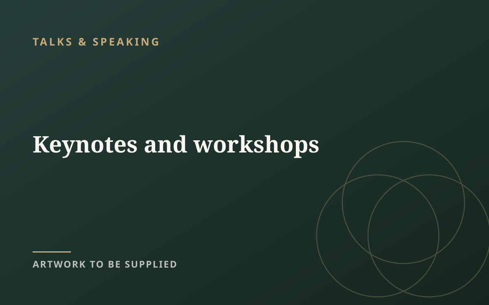
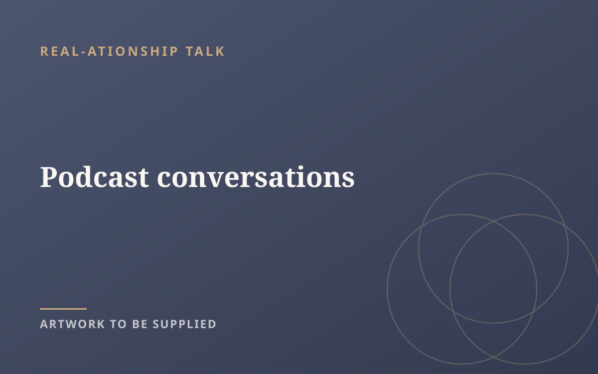
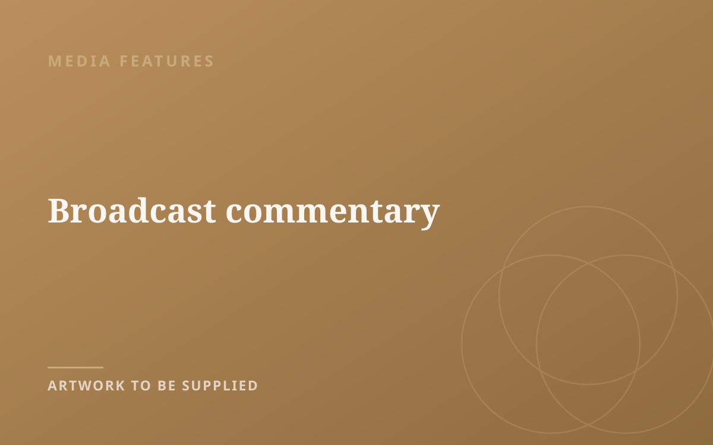
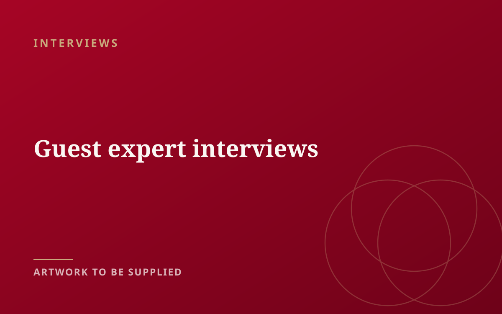
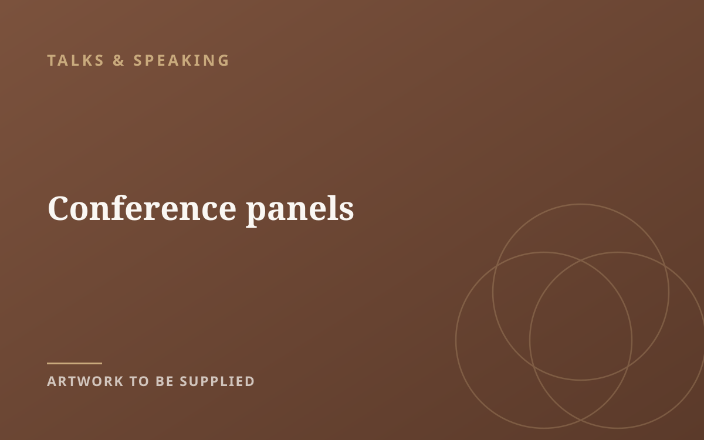
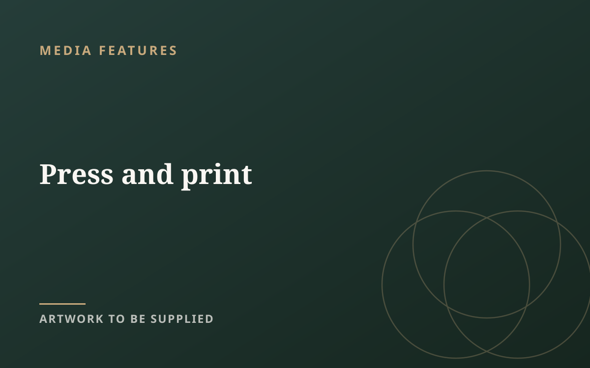
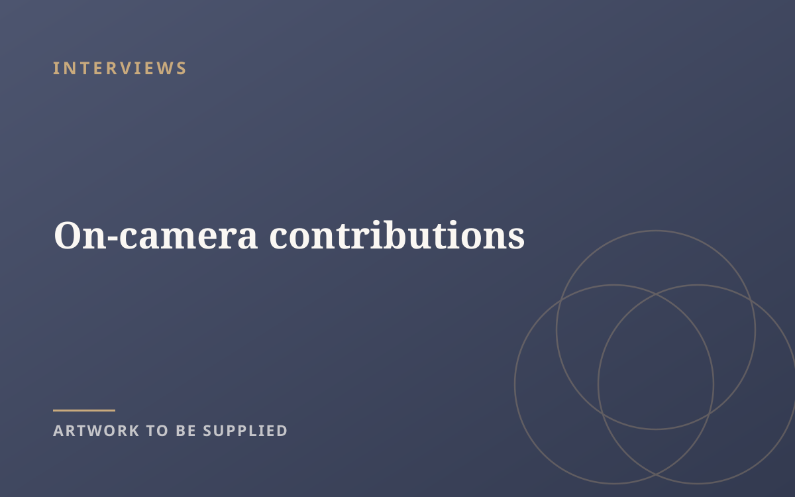
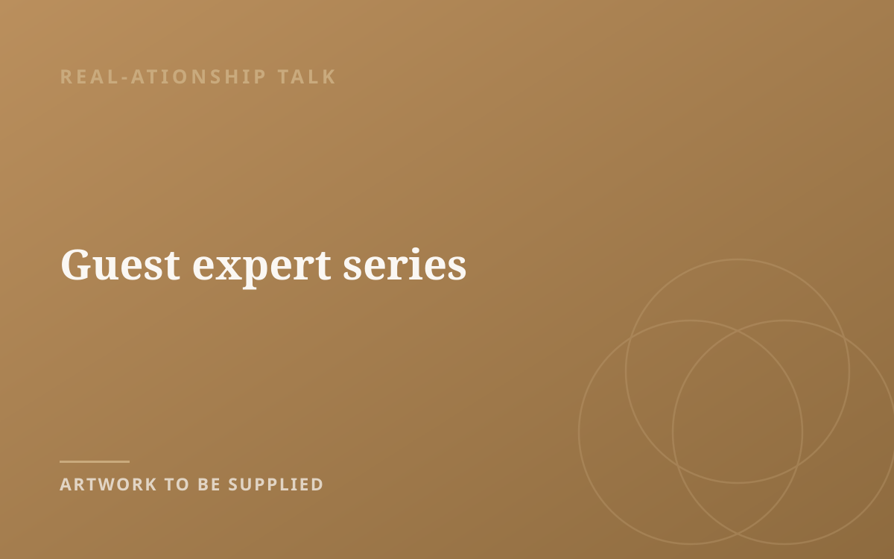

Talks & speaking

Media & Speaking
Expert commentary, thoughtful conversation and speaking across relationships, communication, emotional well-being and the way people connect.
Talks & speaking
Available for events and conferences exploring relationships, communication and emotional well-being.
Media features
Talks, podcast, interviews and features
Speaking engagements, podcast conversations, interviews and media contributions, gathered in one place.

Talks & speaking

REAL-ationship Talk

Media features

Interviews

Talks & speaking

Media features

Interviews

REAL-ationship Talk

Podcast & interviews
REAL-ationship Talk is a Spotify for Creators award-winning, globally charting podcast exploring relationships and emotional well-being. Guests have included Paul C. Brunson, Susan Winter and Charlene Douglas.
For stories about relationships, communication or emotional well-being, get in touch to explore a contribution.